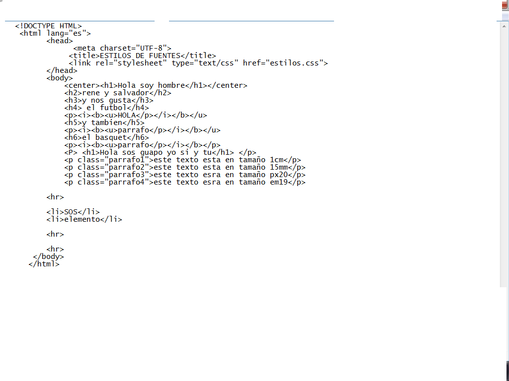
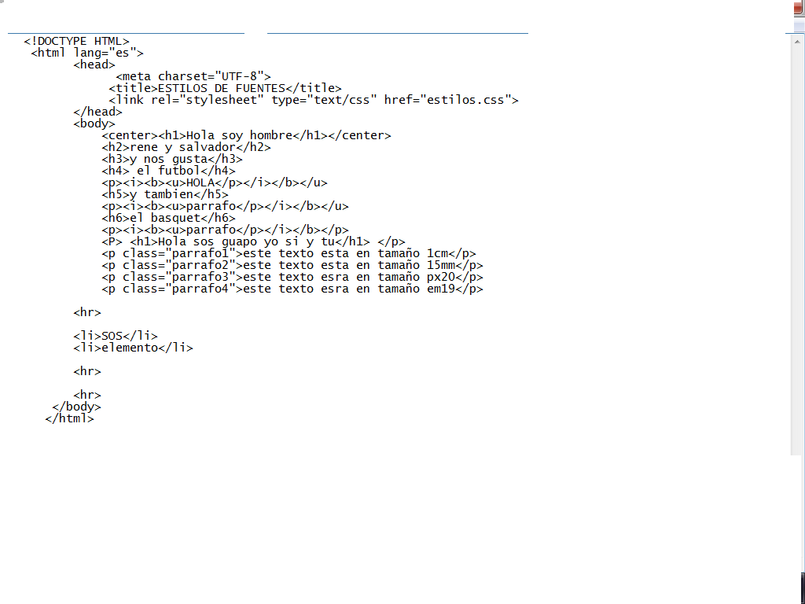
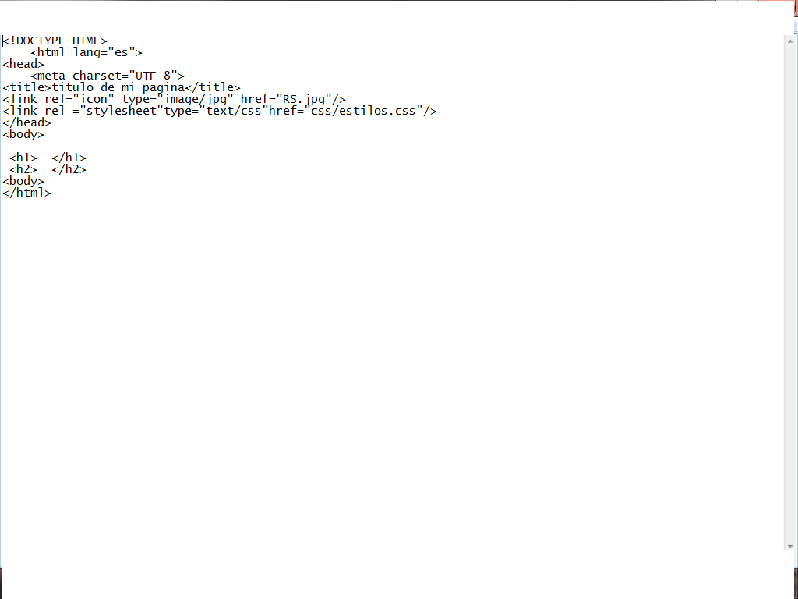
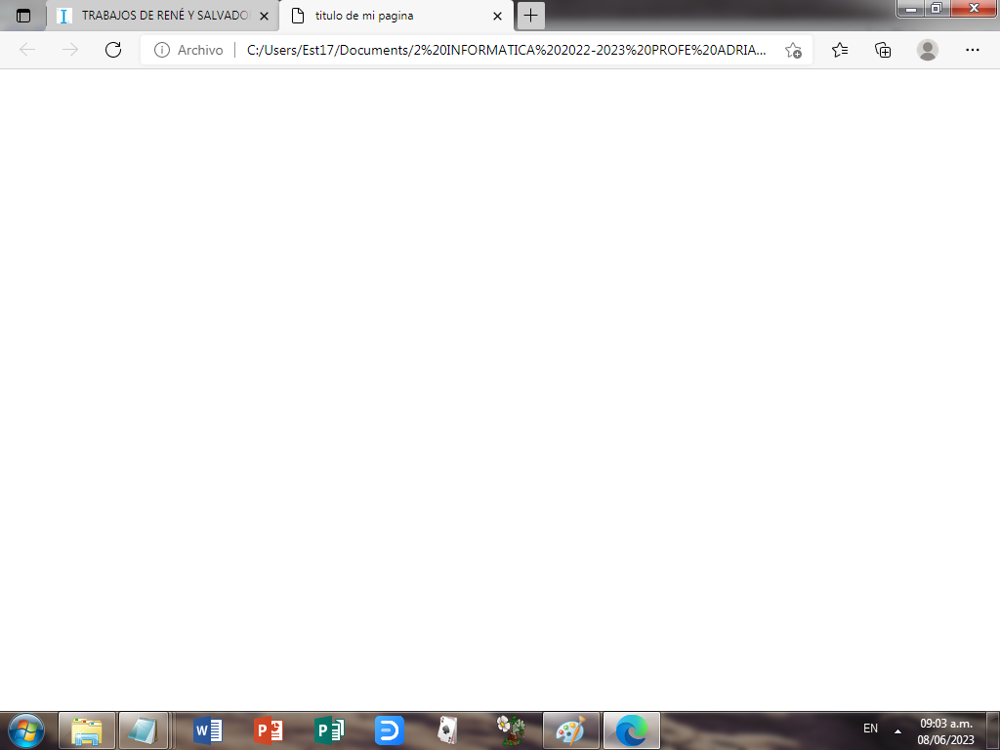

en esta actividad estabamos probando el color y saltos de linea

en esta actividad estabamos probando el color y saltos de linea

en esta actividad estabamos poniendo parrafos ordenados


en esta pagina estabamos intentando o aprendiendo a cambiar el color de fondo de la pagina


en esta pagina teniamos que poner una imagen paro no nos salio


lamaqueta es muy importante para no perder tiempo
 